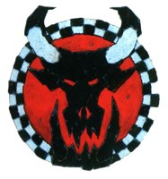
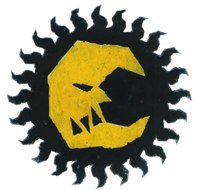
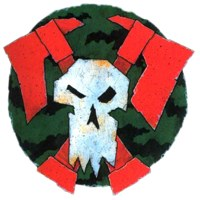
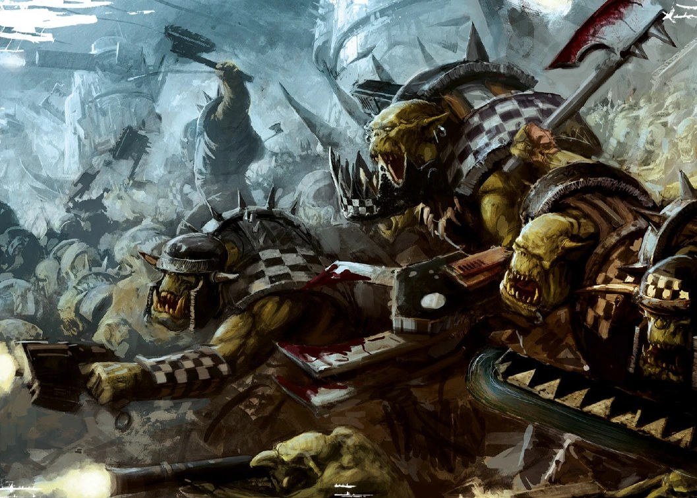

Ork klan
| Ork klans | |
|---|---|
| Great clans of the Orks | |
 A mob of Ork Boyz in a charge, from an Ordo Xenos dossier Artwork © Games Workshop | |
| Largest klans | Goffs, Evil Sunz, Bad Moons, Deathskulls, Snakebites, Blood Axes |
| Other bands | Freebooterz |
| Head | A Warboss, over a mob of Nobz |
| Gathering | The Waaagh! |
| Greatest warlord | Ghazghkull Thraka (Goff) |
An Ork klan (the Orks spell it klan) is a clan of Orks sharing a cult, a colour and a craft. Imperial scholars count six great klans, the Goffs, the Evil Sunz, the Bad Moons, the Deathskulls, the Snakebites and the Blood Axes, and a number of smaller ones. A klan is not a nation or a family. It is a style of war, which is learned, passed on by spores and reinforced by the Orks' own genetic memory, and its warriors identify with it more closely than with any warlord.[1]
The klans compete. Where an Ork world is not at war, the klans fight each other, and the outcome of a fight is the main route by which a Warboss rises. When a Waaagh! gathers, the klans march together under one leader, each in its own colours and each using its own methods, until the tide of conquest runs out and the klans turn on one another again. Ghazghkull Thraka, a Goff, is the only Ork leader known to the Imperium to have held klans together for decades.[1][2]
Organisation
[edit]A klan is headed by a Warboss, the largest and most cunning of the Nobz. He rules by being strong, and loses his place when a stronger Ork kills him. Beneath him are Nobz, each with a mob of Boyz. Alongside are the Meks, who build weapons and vehicles, the Painboyz, who treat injuries, and the Weirdboyz, whose raw psychic ability makes the Waaagh!. Gretchin and Snotlings carry out the labour.[1]
A klan identifies itself by a colour and a symbol, painted on the Orks' armour, vehicles and flags. Orks hold that the colour does more than look: red vehicles go faster, and yellow gear looks richer. Imperial scholars regard this as part of the Orks' collective psychic field.[1]
The great klans
[edit]| Klan | Mark | Colours | Character |
|---|---|---|---|
| Goffs |  | Black and white checks | The strongest and most brutal, who favour close combat and large mobs. Their greatest Warboss is Ghazghkull Thraka. |
| Evil Sunz | Red | Lovers of speed, who ride bikes, buggies and trukks and believe that red ones go faster. | |
| Bad Moons |  | Yellow | The wealthiest klan, whose currency is teef (teeth). They keep the best weapons and flashiest armour. |
| Deathskulls | Blue | Looters and scavengers, who take what they need from the dead and from other klans. Their Meks are said to be good at repairs. | |
| Snakebites | Green and brown | Traditionalists who avoid new technology, ride boars and hold to old customs. They are tough and ill-regarded. | |
| Blood Axes |  | Camouflage | The most cunning, who learn from their enemies, copy Imperial uniforms and tactics, and trade with humans. Other klans regard them as cowards. |
Goffs
[edit]
The Goffs are known to the Imperium as the most dangerous klan. They are fanatical about fighting in close combat, wear black, and measure status by the size of the mob. Ghazghkull Thraka, the Prophet of the Waaagh!, is a Goff, and under him the klan has fought in the Wars for Armageddon, at Octarius and in the Great Waaagh!.[1]
Evil Sunz, Bad Moons and Deathskulls
[edit]The Evil Sunz mount their war on trukks, bikes and warbuggies, and they supply most of the Speed Freeks that appear in a Waaagh!. The Bad Moons are rich enough to buy the best, and their Flash Gitz are armed with weapons far better than anything the other klans have. The Deathskulls, by contrast, steal from the others, and a Deathskull Mek can make a good gun from anything.[1]
Snakebites and Blood Axes
[edit]The Snakebites reject new machines, riding boars and fighting with axes. The Blood Axes are the most useful klan for the Imperium's enemies: they trade with humans, buy Imperial equipment. They also fight alongside Imperial forces on occasion, and this has led to Ork civil wars among the klans.[1]
Freebooterz and others
[edit]Some Orks leave their klans. The Freebooterz are free bands of Orks who raid on their own account and carry a combined mark. They are led by Kaptins, who captain captured ships, and are known in the Imperium as pirates. There are also smaller klans, such as the Rebel Grots and the Dread Mobs.[1]
Klans in the Era Indomitus
[edit]The Great Rift, called "Gork's Grin" by the Orks, triggered a Waaagh! that is still going on. Klans across the Imperium have joined it and the older feuds have been suspended. Ghazghkull's own Goffs and the Evil Sunz have been reported at the head of the greatest hosts, and the Blood Axes have been seen at the back. Imperial commanders treat any klan whose colours are not known to them as an unknown force until proven otherwise.[3]
Timeline
[edit]| Date | Event |
|---|---|
| M32 | Urk falls to the Orks in the War of the Beast |
| 932.M41 | Ghazghkull Thraka is struck by a bolter shell at Urk and rebuilt by Mad Dok Grotsnik |
| 941.M41 | The Goffs' hulk Wurld Killa reaches Armageddon: the Second War for Armageddon begins |
| 945–996.M41 | Raids under Ghazghkull's glyphs rebuild the Goff strength |
| 998.M41 | Ghazghkull returns to Armageddon: the Third War for Armageddon |
| 999.M41 | The Great Rift opens and the Orks greet it as the start of the Great Waaagh! |
| M42 | The klans fight the Imperium and other powers on many fronts |
See also
[edit]References
[edit]- ^ a b c d e f g h Reynolds, John. Fabius Bile: Clonelord (novel). Black Library, pp. 406-407. Codex: Orks (8th Edition), pp. 6-27. Games Workshop.
- ^ Prophecy of the Wolf (8th Edition), pg. 3. Games Workshop. Abnett, Dan. Horus Rising (novel). Black Library.
- ^ McNeill, Graham. The Wolf of Ash and Fire (novella). Black Library. Swallow, James. Fear to Tread (novel). Black Library.